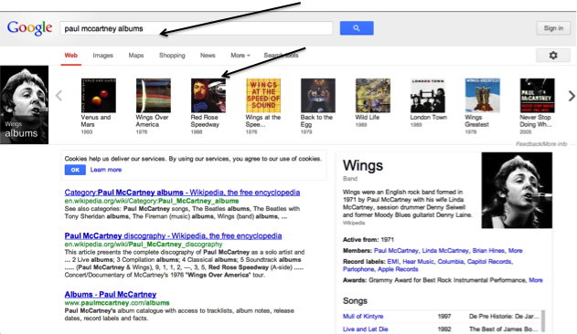

Many of the features of semantic search are increasingly found in web search. For a number of queries, Google, as well as providing a page ranked list of links, uses the Google Knowledge Graph to provide direct answers to questions. As we see below, a search for “paul mccartney albums” results in a horizontal panel of albums. On the right we see the disambiguation pane (described in section 3.8.2 of chapter 3 in the context of Rich Snippets) giving additional information about the primary entities extracted from the query and mapped to the Google Knowledge Graph.

Figure 44: Semantic search in Google.